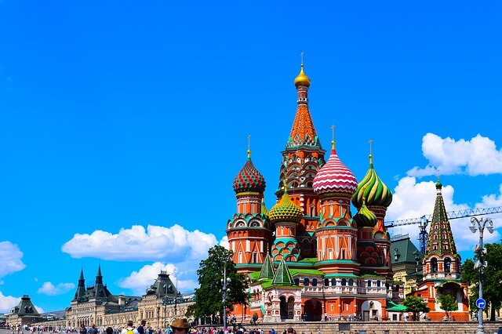

The World's Most Visited Countries in The World
HOME | BLOG
According to a report published by the World Tourism Organization, France received more visitors than any other country in the world in 2017. More than 86.9 million visitors came to France to see such world-famous attractions as the Louvre, the Eiffel Tower, Versailles, and the Arc de Triomphe. Many of these major attractions are located in the capital city of France, Paris, which is also among the largest cities in Europe by population. Spain, the United States, and China also topped the list of the world's most visited countries.
1. France - 86.9 million visitors

France leads the world in the field of tourism. France hosts a variety of places of tourist interest like cities of cultural interest such as Paris, Lyon, Strasbourg, the Alpine mountains, ski resorts, beaches, picturesque French villages, spectacular gardens and parks, and more.
The country is home to a whopping 37 UNESCO World Heritage Sites which are well recognized globally for their outstanding universal value. In France, 9.7% of the GDP is contributed by the travel and tourism sector. 30% of the revenue generated by tourism is obtained from foreign tourists, while the remaining 70% is derived from domestic tourism. Much like France is the most visited of the world's countries, its capital city of Paris is the most visited city in the world.
2. Spain - 81.8 million visitors

Tourism is a major industry in Spain, contributing nearly 11% to the national GDP of the country. The majority of visitors to Spain come from European countries, such as the United Kingdom, France, Italy, and Germany. Between the historical cities and towns of the country like Barcelona and Madrid.
The world-class resorts at the Mediterranean and Atlantic coasts of the country, the popular festivals like the Carnival and the Running of the Bulls, 15 national parks, well-developed winter tourism facilities, and a bustling nightlife, Spain is a hotspot of tourist attractions. 13 Spanish cities are also regarded as UNESCO World Heritage Sites, attracting foreign visitors with their unique charm and significance.
3. United States - 76.9 million visitors

The United States is a vast country serving a large number of attractions to global travelers. Many of the U.S. cities like New York, Los Angeles, Las Vegas thrive with tourists all year round. Major natural attractions within the country include the Grand Canyon, Yellowstone National Park.
The Alaskan subarctic wonders, Hawaiian beaches and more. In 29 states of the country, the tourism industry is among the first three industries generating the maximum number of employment opportunities. The US receives the greatest number of foreign tourists from Mexico, Canada, and the United Kingdom and its domestic tourism industry is also highly active.
4. China - 60.7 million visitors

The land of the Great Wall of China, the Five Sacred Mountains, the Shaolin Temple, the Huangguoshu Waterfall, the Forbidden City, the Three Gorges, and other naturally, culturally and historically important sites, China is indeed one of the most coveted tourist destinations in the world. The country received 55.6 million foreign visitors in 2014 and profited from a foreign exchange income of $45.8 USD in 2010.
China’s tourist numbers are estimated to increase rapidly in the coming years with the World Trade Organization (WTO) estimating that by 2020 the country will rank number one in the worldwide tourism sector.
5. Italy - 58.3 million visitors

For many, Italy is one of the dream destinations of their life. With 50 UNESCO World Heritage Sites, innumerable cultural artifacts, buildings, and archaeological sites from the Roman Empire and the Renaissance periods, along with the quaint Alpine villages and towns in the north of the country and fascinating Mediterranean coasts to the south.
Italy is justifiably the 5th most visited country in the world. Some of its most visited cities include Rome, Venice, Florence, and Milan, each with their unique attractions, history, culture and cuisine. Italy consistently ranks amongst the world's most-visited countries.
6. Mexico - 39.3 million visitors

Mexico, a large country found in North America, is well-known for its pristine beaches and world-class resorts. In recent decades, the tourism industry in the country has experienced a whirlwind of substantial growth. With its wealth of culture and UNESCO World Heritage sites, it's no wonder to see why travelers love Mexico.
The vast majority of visitors come from its neighbors to the north, Canada and the United States, although an increasing amount of travelers from Europe and Asia also pay a visit to the country.
7. United Kingdom - 37.7 million visitors
With a long and interesting history, as well as rich culture and well developed tourism facilities and infrastructure, the United Kingdom ranks as the 7th most visited country in the world. Tourists in the United Kingdom can generate an income of around $17.2 billion USD for the country.
The majority of visitors arrive from other parts of Europe while tourists from the United States and Canada form the second largest group of foreign visitors to the country. The domestic tourism industry in the country is also thriving. London is the most visited city in the United Kingdom, and the Tower of London is the most popular attraction in the entire country.
8. Turkey - 37.6 million visitors
Turkey is a well-known tourist destination for its many seaside resorts with coastline on both the Mediterranean Sea and Aegean Sea. The country also has a variety of historical sites including ancient monasteries and ruined cities.
The city of Antalya is considered to be the country's tourism capital, although Istanbul, the country's capital, is also popular for its many museums, bazaars, and historical sites. Although Turkey reached 41.2 million visitors in 2014, the tourism sector dropped substantially in the following years. Due to intense advertising, tourist numbers began to rise in 2017
9. Germany - 37.5 million visitors

Germany receives a high number of tourists from all across the globe as well as from within the country. The tourism industry in Germany is estimated to contribute 4.5% towards the national GDP and 2 million employment opportunities are created based on travel and tourism related job requirements.
Berlin, Munich, and Hamburg are among the most-visited cities in the country. Visitations to the country for educational and business purposes is also quite common. Several protected areas within Germany, such as the Saxon Switzerland National Park, the Western Pomerania Lagoon Area National Park, and the Jasmund National Park, also attract millions of tourists every year.
10. Thailand - 35.4 million visitors

With its sunny, sandy beaches, tropical islands, rich wildlife, archaeological sites, temples and monasteries, Thailand is a global tourist hot spot. The vibrant and lively festivals of country, the thriving nightlife, world-class shopping facilities, and delectable Thai cuisine, are all major tourist attractants in the country.
It is estimated that directly and indirectly, tourism generated revenue contributes nearly 20.2% of the national GDP of the country. It is also assumed that by 2032, Thailand will be receiving around 100 million visitors.